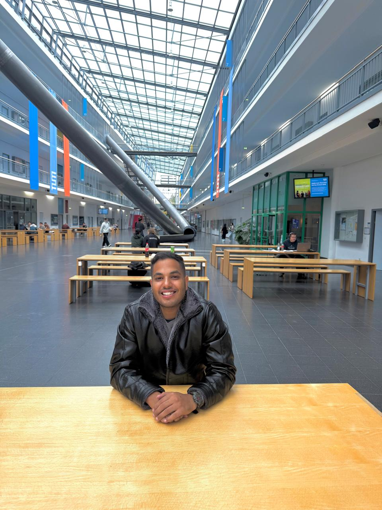
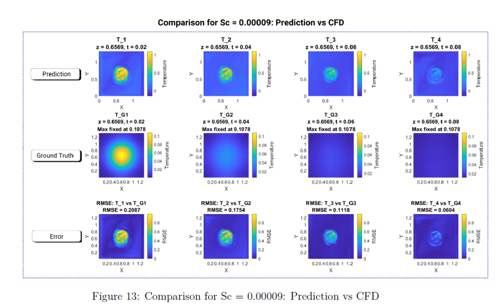
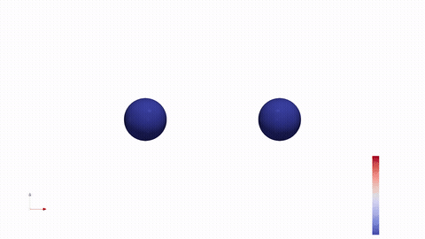
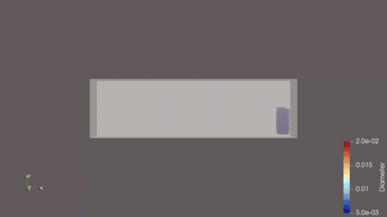
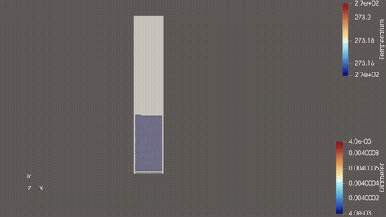

01 / SCIENTIFIC ML
Surrogate modelling for physical systems
Neural networks, physics-informed losses, Gaussian processes and uncertainty-aware models for accelerating simulations and enabling design-space exploration.
I work across multiphase flow, heat and mass transfer, thermal-fluid product development and computational materials science. My research combines physical modelling, numerical simulation, experimental validation and data-driven methods for sustainable engineering applications.

My interests span multiphase transport, thermal-fluid systems, computational materials science and scientific machine learning. I am particularly interested in combining trustworthy physical models with data-driven surrogates where they provide clear engineering value.
Neural networks, physics-informed losses, Gaussian processes and uncertainty-aware models for accelerating simulations and enabling design-space exploration.
VOF, DEM–CFD, scalar transport, turbulence and heat/mass transfer in tanks, pipes, fluidized beds and granular systems.
DFT-informed atomistic spin dynamics, Monte Carlo methods and data-driven temperature rescaling for magnetic materials in electric mobility.
A portfolio spanning deep-learning surrogates, magnetic materials, particle-fluid coupling and free-surface multiphase transport.
Developed a 3D U-Net surrogate model trained on OpenFOAM homogeneous-isotropic-turbulence datasets to predict transient scalar transport and micromixing fields. The work connected CFD-generated data, neural-network architecture design and physics-informed loss terms to accelerate expensive numerical prediction.

Building a multiscale workflow linking DFT-informed parameters, Monte Carlo sampling and Landau–Lifshitz–Gilbert spin dynamics for Nd₂Fe₁₄B. The research predicts finite-temperature magnetisation, anisotropy, exchange stiffness and domain-wall behaviour, while exploring ML-based quantum-to-classical temperature rescaling.
Modelled transient two-phase flow using interface-capturing methods to study liquid motion, wave propagation, phase distribution and transport under changing geometry and operating conditions. These projects strengthened my expertise in boundary conditions, mesh strategy, transient stability, post-processing and physical interpretation of interfacial flows.
Used MFiX and Fortran to model granular and gas-solid systems, progressing from contact and collision validation to inclined granular flow and fluidized-bed heat-transfer applications. The work covered interphase momentum exchange, particle dynamics and large simulation dataset analysis.



At Elaraby Group, the main achievement was leading development work on a thermoelectric water dispenser—combining product design, water-block thermal management, experiments and simulation.
Worked on the end-to-end development of a thermoelectric cooling system for a water dispenser. I integrated Peltier modules with hot- and cold-side water blocks, designed experimental test procedures, analysed temperature and power data, and used thermal-fluid simulation to optimise heat rejection, cooling capacity and coefficient of performance.
The work required balancing contact resistance, coolant flow rate, heat-exchanger effectiveness, electrical input and compact product constraints—turning simulation and test results into practical design changes.
From physical model formulation and simulation to experiments, HPC execution, data processing, visualisation and surrogate modelling.
TensorFlow, neural networks, physics-informed learning, Gaussian processes, PCA / PPCA, Bayesian inference.
OpenFOAM, ANSYS CFX/Fluent, MFiX, VOF, DEM–CFD, turbulence, heat and mass transfer.
DFT-informed modelling, VAMPIRE, Monte Carlo, constrained Monte Carlo, LLG dynamics.
Python, Fortran, MATLAB, Linux/Unix, shell scripting, HPC workflows, ParaView.
PhD research · Multiphase flow · Thermal-fluid systems · Computational materials · Scientific ML